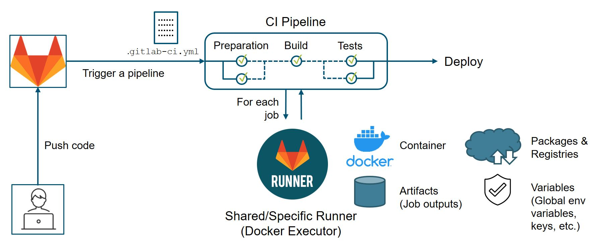
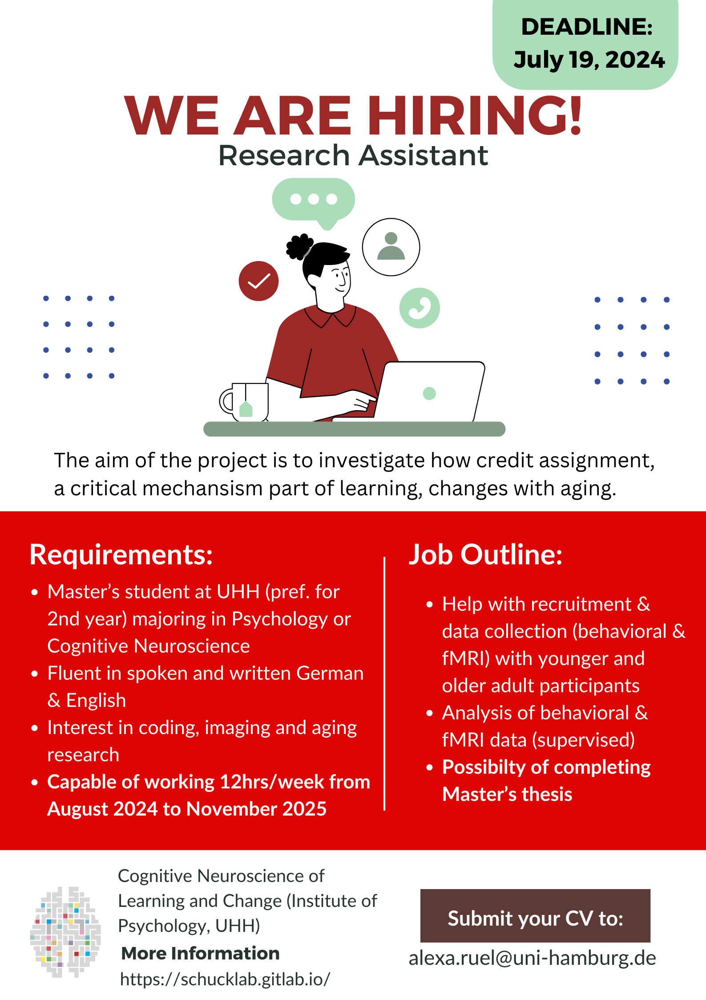
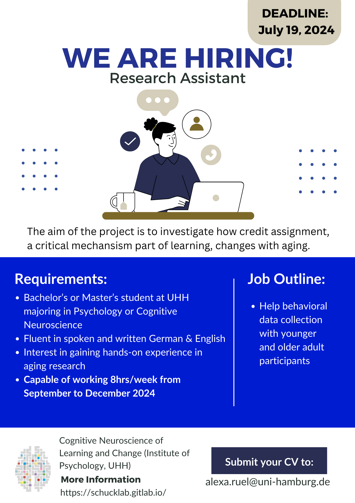

| No | Date | Title | Contents | Reading | Survey/Quiz |
|---|---|---|---|---|---|
| 1 | 2024-10-18 | Introduction to version control | Organizational matters Overview of seminar sessions Introduction to version control Introduction to Git and its advantages |
Intro to version control | Course introduction Survey |
| 2 | 2024-10-25 | Command line | File Systems Benefits of the Command Line Basic Command Line commands |
Command Line | Command Line Quiz |
| 3 | 2024-11-01 | Quarto Workshop | Introduction to Quarto | ||
| 4 | 2024-11-08 | Setup + Git Fundamentals | Installation and configuration of Git Initializing a Git repository Basic Git commands |
Installation, Setup, First steps with Git | Installation Survey, Git Basics Quiz |
| 5 | 2024-11-15 | Basic Git workflow | Practicing basic Git commands Ignoring files with .gitignore Good commit messages |
First steps with Git | Git Basics Quiz |
| 6 | 2024-11-22 | Git Branching and Merging | Understanding branches in Git Creating and switching between branches Merging branches Resolving merge conflict |
Branches | Git Branches Quiz |
| 7 | 2024-11-29 | Introduction to GitHub | Introduction to remote repositories Creating a GitHub account Creating and managing repositories on GitHub Pushing and pulling changes |
GitHub Intro | GitHub Quiz |
| 8 | 2024-12-06 | GitHub with collaborators | Cloning a remote repository Branching and merging in a collaborative environment Pull Requests GitHub Issues Graphical User Interfaces (GUIs), e.g., GitKraken |
GitHub Intro, GitHub Issues | GitHub Quiz |
| 9 | 2024-12-13 | GitHub with the world | Forking a remote repository README files Project Management |
GitHub Intro, GitHub Issues | GitHub Quiz |
| 10 | 2025-12-20 | Repetition and Practice | Repetition and Practice | ||
| 11 | 2025-01-10 | Publishing | Creating Tags with Git Creating Releases with GitHub Using Zenodo for scientific publishing Licences Citation Files |
Tags and Releases | |
| 12 | 2025-01-17 | Graphical User Interfaces | Repetition and Practice Introduction to using GUIs |
Graphical User Interfaces | |
| 13 | 2025-01-24 | Repetition and Practice | Repetition and Practice | ||
| 14 | 2025-01-31 | Summary & Wrap-Up | Course evaluation Repetition and Practice Introduction to using GUIs |
Graphical User Interfaces |
Session 14: Summary & Wrap-Up
Track, organize and share your work: An introduction to Git for research
Course at University of Hamburg & Erasmus University Rotterdam


Konrad Pagenstedt ![]()
July 08 2024 (12:15 pm)
1 Schedule
Schedule
2 Last session: Tags, Releases and Publishing
Last session: Tags, Releases and Publishing
https://lennartwittkuhn.com/version-control-book/chapters/tags-and-releases.html
Your questions about the last session?
3 Course evaluation
Check your mailbox for the link to the evaluation form!
4 Course requirements
From session 1: Your role
Active participation
- This is a pass / fail course. You pass if you fulfill all course requirements:
- Requirement 1: Come to at least 11 out of 13 sessions (85%)
- Requirement 2: Complete all surveys/quizzes
- Requirement 3: Complete all mandatory exercises (implemented in Git)
How do we verify the course requirements?
- Requirement 1: Sign the attendance list
- Requirement 2: Provide a personal codeword. At the end of the semester, send an email with your personal codeword to sekretariat-luv.psych@uni-hamburg.de (Christine Manor). We will send our secretary a list of personal codewords and she will return a list of names.
- Requirement 3: We check your GitHub repositories.
Your tasks
In order to pass this course, you should have accomplished the following tasks:
You have a public
recipesrepository on GitHub.You added a text file (e.g.,
.qmdor.txt) with at least one recipe to the repository.You created a pull request in a partner’s repository (e.g., adding a new recipe).
You reviewed and merged the pull request of a partner in your
recipesrepository.You create a pull request in Lennart’s
recipesrepository, you implemented all additional requests and your pull request was approved and merged by Lennart.You implemented the changes suggested by Konrad in your
recipesrepository and closed the issue.You created a release of your
recipesrepository on GitHub.You completed all quizzes (see next slide).
You completed the extra assignment (if necessary, see next slide).
Deadline: Please complete these tasks until end of July.
Quiz participation
In order to pass this course, you should have completed all quizzes:
How to verify participation
- At the end of the semester, send an email with your personal codeword to sekretariat-luv.psych@uni-hamburg.de (Christine Manor), not to us!
- Our secretary sends us an unsorted list with codewords.
- We verify the quiz participation for each codeword and send Christine a list with codewords that completed all quizzes.
- Christine compares the codewords with your names and send us an unsorted list with names.
Missed more than two sessions?
We will send you an email with an extra assignment.
5 This session
Your feedack
… following popular request
[…] sometimes I loose track of where I am in the Git/GitHub Space. Maybe you can create a “map” on how the things are related and which codes get me from one point to another?
[…] Could you explain how Github enables us to see the version history and how we can access files at different time points?
[…] For the last seminar sessions it might be interesting to look more into GUIs for Git.
[…] what about GUIs? Which one has which benefits and what are payment options? Git kraken looked really promising, is it worth it?
[…] I definitely support the plan to practice what we’ve learned so far so that I don’t forget about it once the semester is over.
This session’s learning objectives
💡 You understand the benefits of Git GUIs compared to the command line
💡 You can name at least two Git operations that can be considered easier in a GUI compared to the command line
💡 You try out different GUIs and become familiar with their features
💡 You know how to manage branches in a GUI
Today’s chapter
https://lennartwittkuhn.com/version-control-book/chapters/gui.html
6 Demonstration: GitKraken/Rstudio
Your turn
- Content Review: Read the chapter “GUIs” in the Version Control Book.
- Implementation: Try out the commands in the chapter! Play around! Have fun!.
- Note: Please complete the implementation exercises on the next slide
Ask questions!
Let’s git started!
Implementation Exercise
Complete the course requirements
We are here to help if you are stuck.
Done? Collaborate with pull requests (using “GUIs”)
- Find a partner.
- Using a GUI, clone their repository if not already done (and pull the newest version).
- Create a new branch.
- Create a new file called
crazy_recipe.txtorcrazy_recipe.qmd. - Input three random ingredients and two kitchen utensils.
- Add, commit and push the changes.
- Create a Pull Request.
- Review the Pull Request from your partner and create a coherent recipe.
- Merge the Pull Request.
7 There’s more …
Graphical User Interfaces (GUIs) for Git


Continuous Integration & Deployment (CI/CD)

Example: Lennart’s recipes repo
- Automated spell check
- Rebuilding of project website
Version Control for data: DataLad
… for data (binary files) 
Sadly, Git does not handle large files well. 

8 Jobs
Jobs


Thank you!
Thank you!
Version Control Course